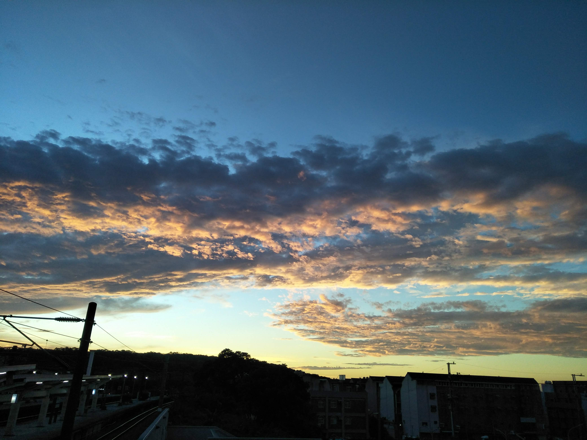

作品


飛機雲
左邊的照片是某年夏天的傍晚，我在回家的路上看到了兩道飛機雲，而它們剛好和電線呈現同一個方向，覺得很有趣就拍下來了，雖然交錯的電線好像導致畫面變得很雜亂，但當下也沒有考慮任何構圖，就是單純的想記錄下來，而傍晚光線的不足和背光剛好導致了剪影的產生。
下面的照片我一直很印象深刻，因為某天突然看到雲朵的形狀像一隻鴿子，這張照片不只記錄了當時的畫面，也一起記錄了當時的那份快樂。
左邊的照片是某年夏天的傍晚，我在回家的路上看到了兩道飛機雲，而它們剛好和電線呈現同一個方向，覺得很有趣就拍下來了，雖然交錯的電線好像導致畫面變得很雜亂，但當下也沒有考慮任何構圖，就是單純的想記錄下來，而傍晚光線的不足和背光剛好導致了剪影的產生。
下面的照片我一直很印象深刻，因為某天突然看到雲朵的形狀像一隻鴿子，這張照片不只記錄了當時的畫面，也一起記錄了當時的那份快樂。